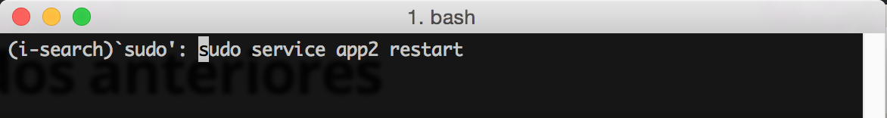

Buscar comandos en el terminal de UNIX
Escribimos una gran cantidad de comandos en nuestros terminales. Encontrar los últimos es sencillo, nos bastamos con nuestra tecla ↑. ¿Pero que ocurre cuando necesitamos el comando que ejecutamos hace varios días?
Búsqueda hacia atrás
Uno de los comandos más útiles de UNIX es el llamado Reverse-i-search. Para ejecutarlo basta con pulsar en CTRL + R en la consola, y empezar a introducir nuestro criterio de búsqueda.
Veamoslo de manera práctica. Imaginemos que hemos ejecutado en el terminal los siguientes comandos, siendo el del final el último ejecutado:
#~ sudo service app restart
#~ sudo service app2 restart
#~ sudo service app3 restart
#~ mv file bbb/
#~ cat bbb/file
#~ cat bbb/another_file
#~ cd ~
#~ mkdir ccc
Después del último comando, para llegar otra vez a sudo service app restart, necesitaríamos pulsar ↑ 8 veces hasta llegar a la línea deseada.
En cambio su pulsamos CTRL+R y comenzamos a escribir "sudo" obtenemos en la consola lo siguiente:
Terminal de Mac OS al ejecutar Reverse-i-search
Al buscar hacía arriba la primera coincidencia con "sudo" es sudo service app3 restart. No es nuestro objetivo, pero no hay ningún problema, al pulsar otra vez CTRL + R obtenemos la siguiente coincidencia: sudo service app2 restart. Como imagináis, otra vez más a CTRL + R y finalmente:
Terminal de Mac OS una vez encontrado el resultado que necesitamos
Una vez que hemos llegado al comando en cuestión tenemos dos opciones. Si queremos ejecutar directamente el comando pulsamos en ENTER. Por el contrario, si queremos el comando para modificarlo antes de ejecutarlo, pulsamos en →.
Búsqueda hacía delante
También se puede dar el caso de que nos hayamos pasado el comando que necesitamos. En este caso podemos parar la ejecución y volver a empezar, o podemos acudir a i-search.
Preparamos el terreno
En la mayoría de los terminales será necesario configurar la consola para poder ejecutar el comando de búsqueda hacia delante (i-search). Para ello simplemente ejecutamos el siguiente comando:
stty -ixon
Si queréis más información sobre el por qué de esta necesidad, dirigios al siguiente enlace de StackOverflow.
Continuamos!
Ahora solo queda saber cómo activar dicho comando. Al igual que Reverse, tiene su propio atajo de teclado y es: CTRL + S.
Al ejecutar este comando veremos como el terminal cambia el programa de Reverse-i-search a i-search. Ejecutando otra vez más CTRL + S comenzaremos a ir hacía delante en función de nuestro criterio de búsqueda.

Ejecución del comando i-search en el terminal de MAC